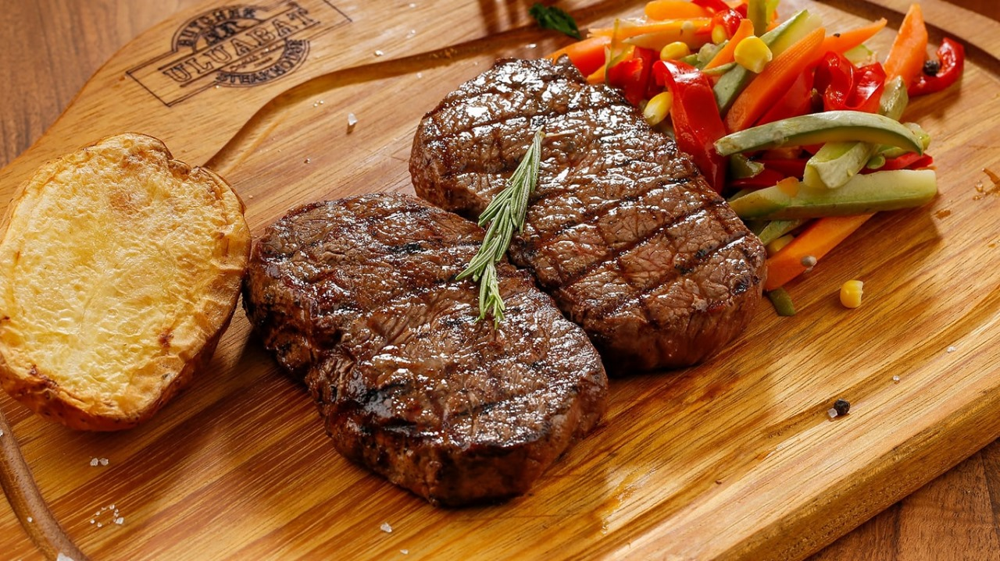
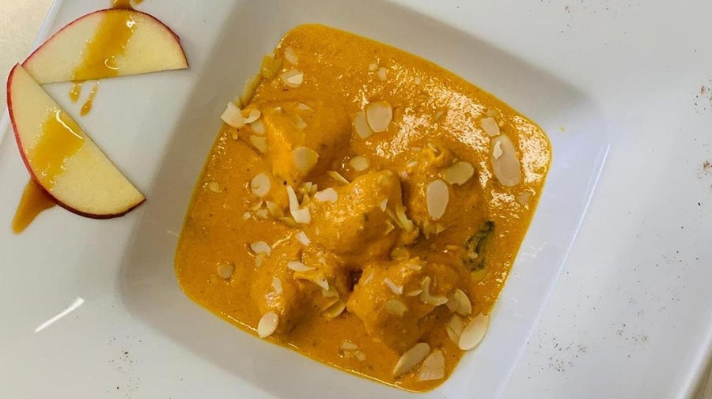
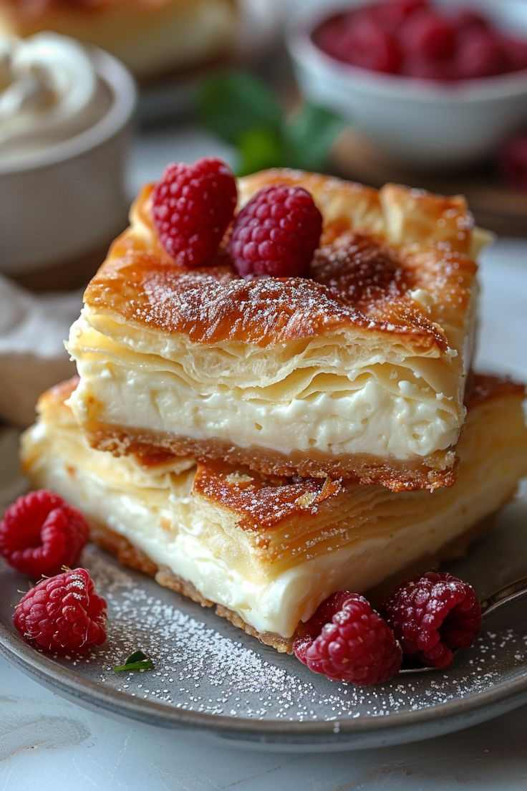

A propos
Idéalement situé au cœur de la médina de Marrakech, Le Gourmet est considéré comme la perle des restaurants de la ville ocre. Table d’hôtes des plus anciennes de Marrakech, on doit la magie de ce lieu à Mohamed Zkhiri qui en a fait un passage immanquable pour les gourmands et gourmets à la quête d’expériences authentiques.



